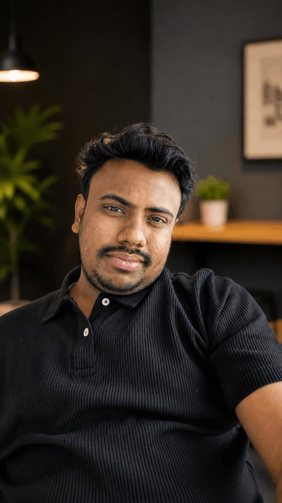
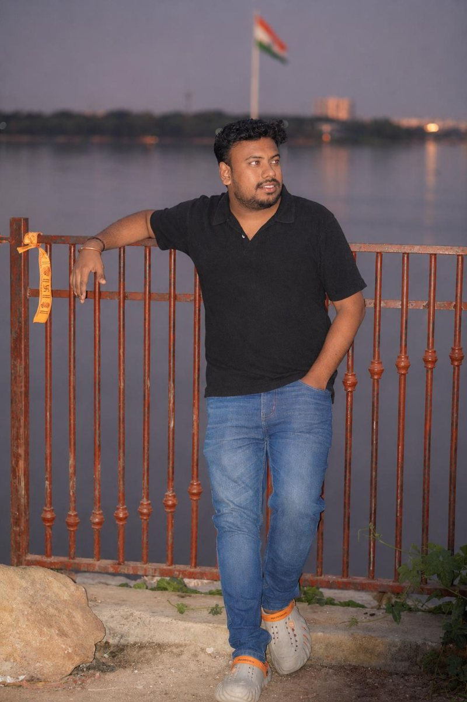

Photos
Satyaban Choudhury
Satyaban (Satya) Choudhury — Senior Network, Infrastructure & Cloud Security Engineer based in Hyderabad, India. See the professional portfolio, LinkedIn or GitHub.



Photos
Satyaban (Satya) Choudhury — Senior Network, Infrastructure & Cloud Security Engineer based in Hyderabad, India. See the professional portfolio, LinkedIn or GitHub.

